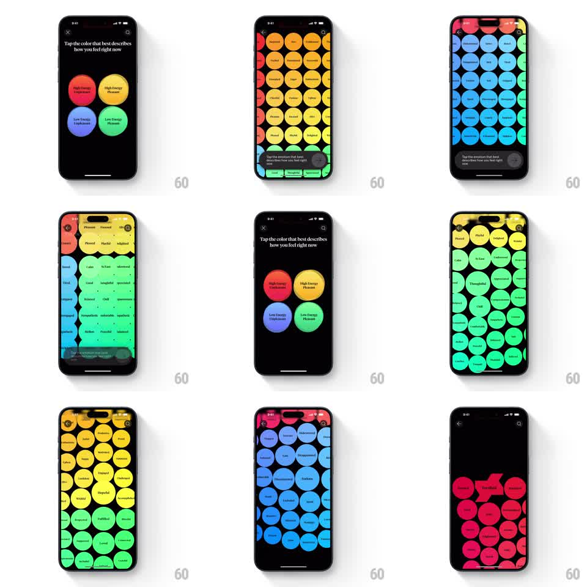

Media
Frame-by-frame

Rebuild this interaction 1:1: How We Feel's emotion picker - four colored quadrant circles that explode into a full-screen field of physics-driven emotion bubbles, each labeled, drifting and jostling under the finger.

Rebuild this interaction 1:1: How We Feel's emotion picker - four colored quadrant circles that explode into a full-screen field of physics-driven emotion bubbles, each labeled, drifting and jostling under the finger.
## Integration
Integration: stack-agnostic spec - springs given as stiffness/damping, timed motions as duration + curve; map every value to your framework and animation library of choice.
## Scene
Black screen with serif prompt "Tap the color that best describes how you feel right now" and four large circles in a 2x2 cluster: red (High Energy Unpleasant), yellow (High Energy Pleasant), blue (Low Energy Unpleasant), green (Low Energy Pleasant). Tapping one fills the screen with a dense honeycomb of same-family colored circles, each carrying an emotion label (Playful, Alive, Hopeful, Calm, Chill...). A prompt pill and X sit at the bottom.
## Motion spec
Pattern: quadrant tap into a physics bubble field.
- Tap a quadrant circle: it scales up to swallow the screen (~350ms, ease-in) as the other three fade, then bursts into the full grid - circles scale in from the tapped point outward in a radial stagger (~15ms per ring, springy overshoot scale 1.1 to 1.0).
- The field is a live physics sim: circles drift slowly on individual wander paths, and dragging or tapping shoves neighbors - they displace with elastic recoil (per-circle spring stiffness ~180, damping ~12) and settle back into the honeycomb.
- Switching quadrants (via back or re-pick) reverses the move: the field contracts into the four-circle cluster, new quadrant re-expands.
- Labels stay upright and centered inside each circle at all sizes.
## Calibration
- Damping low enough for one visible wobble after a shove; critically damped kills the playfulness.
- Stagger radiates from the tap point, not from screen center.
## Reduced motion
Grid fades in fully formed; circles are static and tap-to-select only.
## Don't miss
- Every circle keeps its quadrant's hue family - yellows range gold to lemon, never into green.
- The bottom prompt pill persists over the field ("Tap the emotion that best describes how you feel right now") with the X to go back.